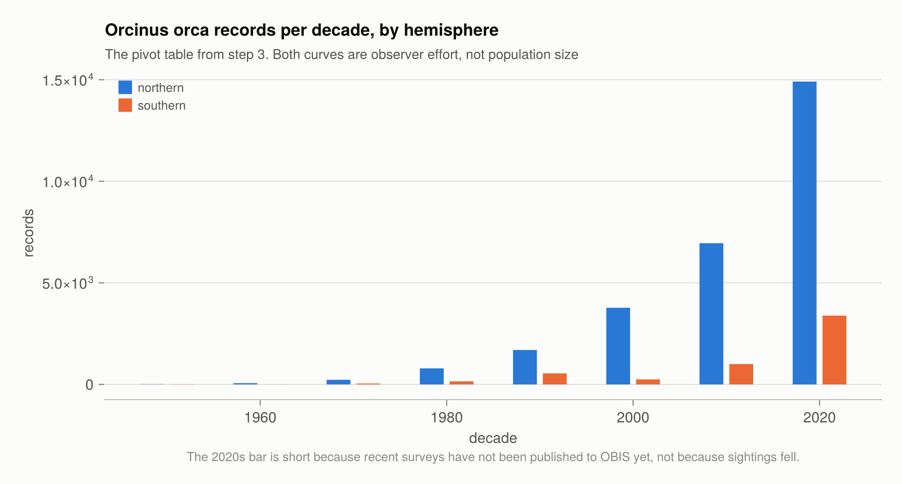
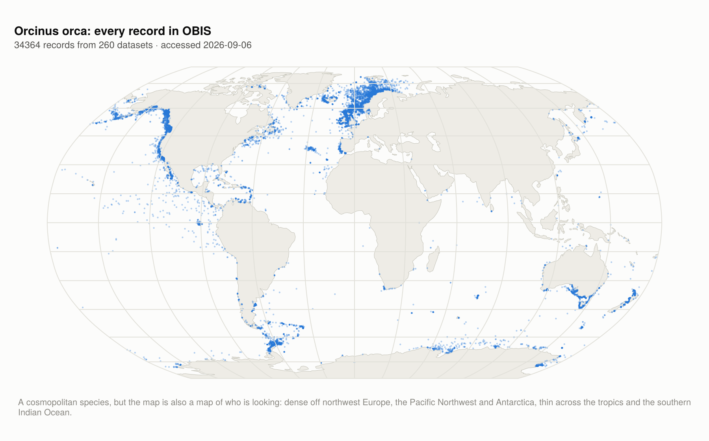
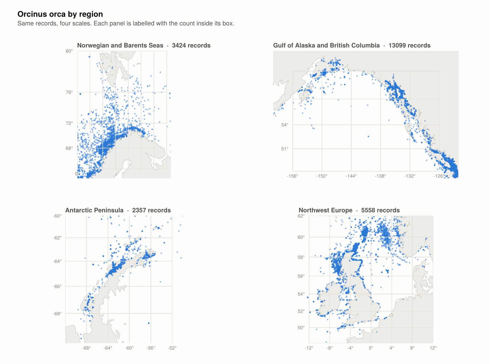
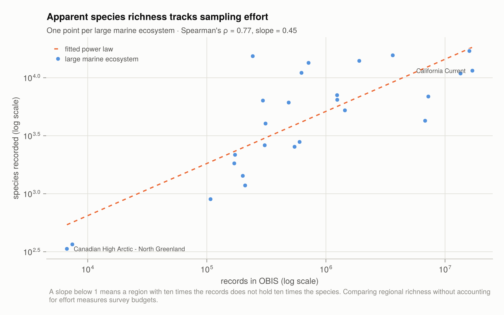

Worked example: killer whales
A full session on one species: retrieve, map, group, pivot, and test a relationship, using the client together with DataFrames and CairoMakie. Analysis and plotting are not part of OBISClient.jl. They happen here on a table the client handed over, which is why it implements Tables.jl.
The script is examples/orcas.jl. Run it with julia --project=examples examples/orcas.jl. Every number and figure below came from that run; the counts move as OBIS ingests data.
using OBISClient, DataFrames, Statistics1. The query, and what it leaves out
Size the query before retrieving it, and ask what the default view is hiding:
st = OBISClient.statistics("Orcinus orca")
OBISClient.statistics("Orcinus orca"; absence = :only)["records"]
OBISClient.statistics("Orcinus orca"; dropped = :only)["records"]presence records returned by default : 34364
datasets : 260
year range : 1758–2026
absence records, excluded by default : 4386
dropped records, excluded by default : 654,386 absence records — surveys that went looking for killer whales and did not find them — are excluded from every default query and from the Mapper downloads. For a species distribution question they are the other half of the evidence.
Retrieving the presences is one call. At 34,364 records it sits under the API limit, so no route decision is needed:
records = OBISClient.occurrence("Orcinus orca"; progress = true)
df = DataFrame(records)2. groupby: where do the records come from?
The columns are already typed, so ordinary DataFrames idiom applies with no cleaning step:
by_basis = combine(groupby(dropmissing(df, :basisOfRecord), :basisOfRecord), nrow => :records)
sort!(by_basis, :records; rev = true)6×2 DataFrame
Row │ basisOfRecord records
│ String Int64
─────┼─────────────────────────────────
1 │ HumanObservation 31325
2 │ MachineObservation 2858
3 │ Occurrence 117
4 │ PreservedSpecimen 58
5 │ MaterialSample 5
6 │ NomenclaturalChecklist 1Overwhelmingly people watching from boats and shorelines, which is worth knowing before treating the records as a survey.
by_dataset = combine(groupby(df, :dataset_id), nrow => :records)
sort!(by_dataset, :records; rev = true)34364 records come from 260 datasets; the largest contributes 8374 (24.4%).
Group on dataset_id, not on the citation text: citation strings come from the provider, and some are missing or shared, which would merge distinct datasets. Grouping on the identifier reproduces the 260 that statistics reports; grouping on the citation gives 251.
3. unstack: a pivot table
Records by decade and hemisphere:
work = dropmissing(df, [:date_year, :decimalLatitude])
work.decade = (work.date_year .÷ 10) .* 10
work.hemisphere = ifelse.(work.decimalLatitude .>= 0, "northern", "southern")
pivot = unstack(
combine(groupby(work, [:decade, :hemisphere]), nrow => :records),
:decade, :hemisphere, :records; fill = 0,
)8×3 DataFrame
Row │ decade southern northern
│ Int64 Int64 Int64
─────┼────────────────────────────
1 │ 1950 7 9
2 │ 1960 2 62
3 │ 1970 46 229
4 │ 1980 155 792
5 │ 1990 546 1696
6 │ 2000 247 3774
7 │ 2010 1005 6951
8 │ 2020 3388 14908
Both columns climb steeply, but neither is a population estimate. They track the spread of digital recording, dedicated cetacean surveys and, more recently, citizen science. The southern dip in the 2000s is a survey programme ending.
4. Mapping
Coordinates are Float64 columns, so they go straight into a plotting call. Land comes from Natural Earth; nothing here is specific to OBISClient.jl:
using CairoMakie, GeoMakie, NaturalEarth
lon = collect(records.decimalLongitude)
lat = collect(records.decimalLatitude)
keep = .!ismissing.(lon) .& .!ismissing.(lat)
fig = Figure(; size = (900, 560))
ga = GeoAxis(fig[1, 1]; dest = "+proj=robin",
xticklabelsvisible = false, yticklabelsvisible = false)
poly!(ga, NaturalEarth.naturalearth("land", 110).geometry;
color = "#eeece6", strokecolor = "#c3c2b7", strokewidth = 0.5)
scatter!(ga, lon[keep], lat[keep];
color = ("#2a78d6", 0.35), markersize = 3, strokewidth = 0)
save("orca-global.png", fig; px_per_unit = 2)
Killer whales are genuinely cosmopolitan, so this map is unusually close to a real distribution — and even so, the density is as much about observers as about whales: heavy off northwest Europe, the Pacific Northwest and the Antarctic Peninsula, thin across the tropics and the southern Indian Ocean.
Zooming in shows structure a world map flattens away. Each panel is the same records under a different bounding box, filtered with ordinary broadcasting:
REGIONS = [
("Norwegian and Barents Seas", (0.0, 44.0, 62.0, 80.0)),
("Gulf of Alaska and British Columbia", (-160.0, -122.0, 47.0, 62.0)),
("Antarctic Peninsula", (-72.0, -50.0, -70.0, -60.0)),
("Northwest Europe", (-14.0, 12.0, 48.0, 62.0)),
]
fig = Figure(; size = (940, 700))
land = NaturalEarth.naturalearth("land", 50).geometry
for (k, (title, (w, e, s, n))) in enumerate(REGIONS)
row, col = divrem(k - 1, 2) .+ (1, 1)
inbox = keep .& (lon .>= w) .& (lon .<= e) .& (lat .>= s) .& (lat .<= n)
ga = GeoAxis(fig[row, col]; dest = "+proj=merc", limits = (w, e, s, n),
title = "$(title) · $(count(inbox)) records")
poly!(ga, land; color = "#eeece6", strokecolor = "#c3c2b7", strokewidth = 0.6)
scatter!(ga, lon[inbox], lat[inbox];
color = ("#2a78d6", 0.5), markersize = 4, strokewidth = 0)
end
The Norwegian records trace the herring-following population along the coast and shelf; the British Columbia records trace the Inside Passage; the northwest Europe panel is dominated by a dense block north of Scotland. Each is a survey footprint as much as a habitat.
5. A statistic worth computing
Fitting a trend line to record counts over time would just measure observers. A more useful question, and one that quantifies the problem: does apparent species richness track sampling effort across regions?
statistics returns both counts for an area in a single request, so this costs one request per region:
areas = OBISClient.area()
lme = [i for i in 1:OBISClient.nrow(areas)
if !ismissing(areas.type[i]) && areas.type[i] == "lme"]
name, records, species = String[], Int[], Int[]
for i in lme[1:26]
s = try
OBISClient.statistics(; areaid = areas.id[i])
catch err
err isa OBISClient.OBISError || rethrow()
continue # a region with no data is not a failure
end
(s["records"] > 0 && s["species"] > 0) || continue
push!(name, String(areas.name[i]))
push!(records, Int(s["records"]))
push!(species, Int(s["species"]))
end
regions = DataFrame(; region = name, records, species)
sort!(regions, :records; rev = true)8×3 DataFrame
Row │ region records species
│ String Int64 Int64
─────┼──────────────────────────────────────────────────
1 │ California Current 16968104 11505
2 │ East Central Australian Shelf 16014671 17001
3 │ Celtic-Biscay Shelf 13492953 10882
4 │ Gulf of Alaska 7242071 6887
5 │ Baltic Sea 6806532 4259
6 │ Caribbean Sea 3640502 15609
7 │ Agulhas Current 1905190 13977
8 │ Barents Sea 1443787 5235Spearman's rank correlation needs no distributional assumption and is three lines:
function spearman(x, y)
rank(v) = invperm(sortperm(v))
return cor(float.(rank(x)), float.(rank(y)))
end
rho = spearman(regions.records, regions.species)
lx, ly = log10.(regions.records), log10.(regions.species)
b = cov(lx, ly) / var(lx) # slope of log(species) on log(records)across 26 large marine ecosystems
Spearman's rho (records vs species) : 0.771
slope of log10(species) on log10(records) : 0.449
ρ = 0.77 across 26 large marine ecosystems: regions with more records have more species on record. The slope of 0.45 says how the two are related — richness rises roughly as the square root of effort, so a region with a hundred times the records shows about ten times the species.
Read the slope carefully in both directions. It is not a claim that the Caribbean is poorer than the California Current; it is a warning that any comparison of regional richness which ignores effort is partly measuring survey budgets. It is also not a bias correction — turning these counts into comparable richness estimates is a modelling problem, and the scope of a different package.
Two caveats on the analysis itself, since it is an example and not a result:
- The 26 regions are the first 26 large marine ecosystems in the area list, not a designed sample. They differ in area, latitude and habitat, none of which is controlled for.
- Records and species are not independent quantities: a species enters the count because a record exists. The correlation is real, but it is partly definitional, which is exactly why the slope matters more than the correlation.
The complete scripts
The code above is trimmed to what each step is about — the shared theme, the light and dark variants, and the captions are left out. Both scripts appear in full, exactly as they are in the repository, under Example scripts.
What to take from this
The client's job ended at step 1. Everything after it is ordinary Julia on an ordinary table — which is the argument for a stable typed schema: groupby, unstack, cor and log10 all work without a cleaning step, and they keep working when the query changes.
The interpretation, though, does not come from the tools. See Interpreting OBIS data.